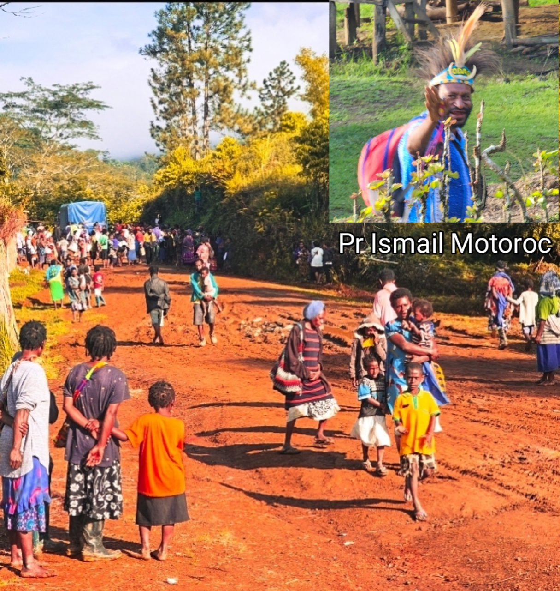
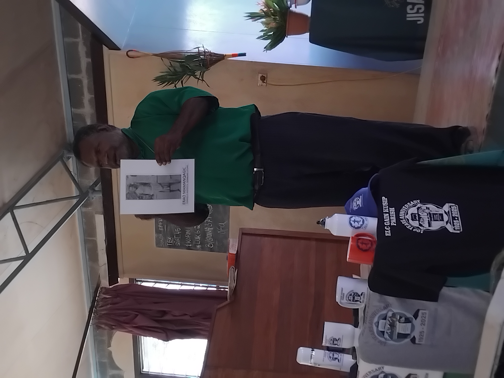

Mr Edwin Rumbam Speaking On the Launching Of 100 Years Anniversary of Gain Kusip at Hauta Congregaton
ELC-Gaing Kusip Parish is one of the major Parish in ELC-Boana District withhold many Congregations Compare to other Parish in ELC-Boana District. It has been since 1925 the... Missionary arrives with Gospal and show us the light of Christ.In remeberance of this we here now prepare to Celebrate the 100 Years Anniversary of Gospal in our Parish.
This is Edwin Rumbam Speaking on the Launching of the 100th Year Celebration at Hauta Congregation, Gaing Kusip Parish in ELC-Boana Districts. He Said he will be there to support in this time of preparation towards the Annivesary Celebration this Christmas 2025. He already started supporting us with some Goodies which was already put on sale now. You can find it on Gaing Kusip Online Store or you can contact us for more information. He alos Said he will be working with us to build Gaing Kusip Resource Center at Hauta Congregation. This Program is still Proccessing, we will be notified when the process is done.

Wowom Village
Date: 07th February 2025
Pastor Ismael Motoro Leaving Gaing Kusip Parish
The Day of mourning has arrived, on the 7th of February 2025 Gaing Kusip Parish arrange to allow Pr Ismael Motoroc travel to his home home to see his family members and relatives at Kundiawa, Chimbu Province, after Serving Gaing Kusip Parish for eleve years it was memorable event that put...
Gain Kusip Parish and Hauta Congregation to a big Mourn. Upper congregation of Hauta Congregation Gathered at Wowom village for the final good bye, Kasing, Munguleng and Gufin Gathered in Moimbiring, another gethering Spot on Gain School, Extra Market, Finally he met with Gaing Kusip Town at Hunka and made his final good bye with a final word to ELC-Gaing Kusip Parish as he travel home.

Date: 07th February 2025
Pr Gembube Wongege Speaking On the Launching Of 100 Years Anniversary
With Gospal that brought to us since the Missionary has arrived, we pleased to have have this men bihind...
us. Here is Pr Gembube Wongege giving brief history of how and when did the missionary arrived in Gaing kusip Parish he. He said he will provide the full history during the Annivessary Celebration this Christmas 2025.